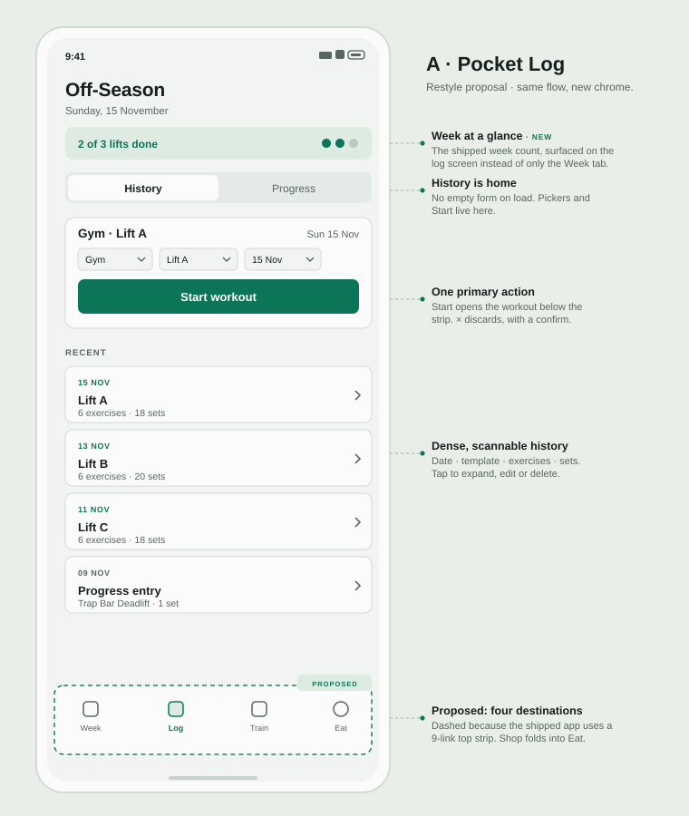

A Pocket Log
Recommended baseRestyle proposalPhoneLow effort
History-first phone app. Keeps the shipped flow — pickers and Start in History, workout below the strip — but restyles the chrome and proposes four bottom destinations. The literal current screens are kept as shipped references.
- HomeWeek
- EntryStart workout from History
- Best forGym, one hand, existing users
- NeedsR1–R16 · all log state